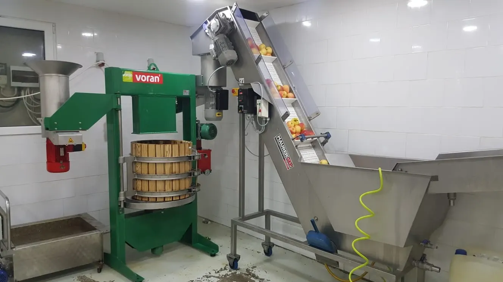
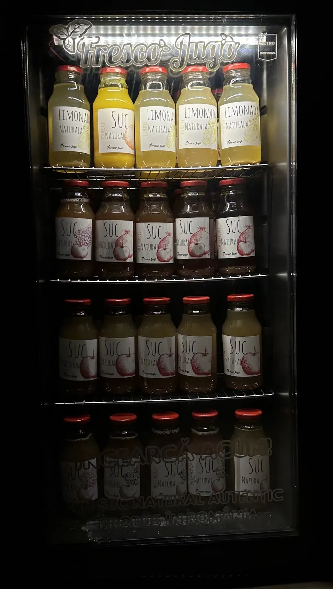

{{Magazin cu sucuri · Lețcani, lângă Iași|Juice shop · Lețcani, near Iași|Loja de sumos · Lețcani, perto de Iași}}
{{Suc natural|Natural juice|Sumo natural}}{{de mere,|from apples,|de maçã,}} {{presat|pressed|espremido}}{{la Lețcani.|in Lețcani.|em Lețcani.}}
{{Merele urcă pe banda de spălare, trec prin moară și ajung în presa cu coș de lemn. Sucul intră în sticle cu capac roșu: mere simplu sau cu aronia, gutui, morcovi, struguri ori rodii. Și, separat, portocale și limonadă cu miere.|The apples ride up the washing belt, go through the mill and into the wooden-basket press. The juice goes into red-capped bottles: plain apple, or with aronia, quince, carrot, grape or pomegranate. And, separately, orange juice and lemonade with honey.|As maçãs sobem pela passadeira de lavagem, passam pelo moinho e entram na prensa de cesto de madeira. O sumo vai para garrafas de tampa vermelha: maçã simples ou com arónia, marmelo, cenoura, uva ou romã. E, à parte, sumo de laranja e limonada com mel.}}
{{Raftul|The shelf|A prateleira}}
{{Mere. Și mere cu ceva.|Apples. And apples with something.|Maçã. E maçã com mais alguma coisa.}}
{{Fiecare sticlă are pe etichetă fructul desenat de mână. Pune în ladă ce vrei să iei: comanda pleacă pe WhatsApp sau SMS și o ridici de la Lețcani.|Each bottle has its fruit hand-drawn on the label. Put what you want in the crate: the order goes out by WhatsApp or SMS and you collect it in Lețcani.|Cada garrafa tem a fruta desenhada à mão no rótulo. Ponha na grade o que quer levar: a encomenda segue por WhatsApp ou SMS e levanta-a em Lețcani.}}
{{Prețul și mărimea sticlei:|Price and bottle size:|Preço e tamanho da garrafa:}} {{de confirmat|to be confirmed|a confirmar}} {{Le afli la telefon sau în răspunsul la comandă.|Ask on the phone or in the reply to your order.|Pergunte ao telefone ou na resposta à encomenda.}}
{{Atelierul|The workshop|A oficina}}
{{De la mere la sticlă, în patru pași.|From apples to bottle, in four steps.|Da maçã à garrafa, em quatro passos.}}
{{Asta se vede în fotografia din atelier: banda inox, moara, presa verde cu coș de lemn.|This is what the workshop photo shows: the stainless belt, the mill, the green press with its wooden basket.|É o que mostra a fotografia da oficina: a passadeira inox, o moinho, a prensa verde de cesto de madeira.}}

- {{Spălare|Washing|Lavagem}}{{Merele urcă pe banda inox din cuva cu apă.|The apples ride up the stainless belt from the water tank.|As maçãs sobem pela passadeira inox a partir da cuba de água.}}
- {{Moara|The mill|O moinho}}{{Prin pâlnie intră în moară și ies zdrobite.|Through the funnel they go into the mill and come out crushed.|Pelo funil entram no moinho e saem esmagadas.}}
- {{Presa|The press|A prensa}}{{Pasta umple coșul de lemn; placa coboară și sucul curge pe tavă.|The mash fills the wooden basket; the plate comes down and the juice runs onto the tray.|A polpa enche o cesto de madeira; a placa desce e o sumo escorre para o tabuleiro.}}
- {{Sticla|The bottle|A garrafa}}{{Sucul ajunge în sticle de sticlă cu capac roșu și etichetă desenată.|The juice goes into glass bottles with a red cap and a drawn label.|O sumo vai para garrafas de vidro com tampa vermelha e rótulo desenhado.}}

{{Pe ușa frigiderului|On the fridge door|Na porta do frigorífico}}
{{„Încearcă acum! Suc natural autentic, produs în România.”|“Try it now! Authentic natural juice, made in Romania.”|«Experimente agora! Sumo natural autêntico, produzido na Roménia.»}}
{{Rafturile de sus: limonadă cu miere și portocale. Dedesubt: mere, simplu și cu fructe.|Top shelves: lemonade with honey and orange. Below: apple, plain and with fruit.|Prateleiras de cima: limonada com mel e laranja. Em baixo: maçã, simples e com fruta.}} {{În ce magazine din Iași găsești frigiderul:|Which Iași shops carry the fridge:|Em que lojas de Iași está o frigorífico:}} {{de confirmat|to be confirmed|a confirmar}}
{{Comandă pentru ridicare|Order for pickup|Encomenda para levantar}}
{{Umple lada, treci s-o iei.|Fill the crate, come and get it.|Encha a grade, venha buscá-la.}}
{{Alegi sticlele, ziua în care treci și numele. Comanda pleacă pe WhatsApp sau SMS la 0755 611 178, iar ei îți confirmă prețul și ora.|Pick the bottles, the day you’ll come and your name. The order goes by WhatsApp or SMS to 0755 611 178, and they confirm the price and time.|Escolha as garrafas, o dia em que passa e o nome. A encomenda segue por WhatsApp ou SMS para o 0755 611 178 e eles confirmam o preço e a hora.}}
{{Unde|Where|Onde}}
{{La Lețcani, lângă Iași.|In Lețcani, near Iași.|Em Lețcani, perto de Iași.}}
- Ferma caprita III
707280 Lețcani, {{județul Iași|Iași county|distrito de Iași}} · {{cod Plus|Plus Code|Plus Code}} 5CQX+HR - {{Telefon|Phone|Telefone}}
0755 611 178 - {{Program|Opening hours|Horário}}
…